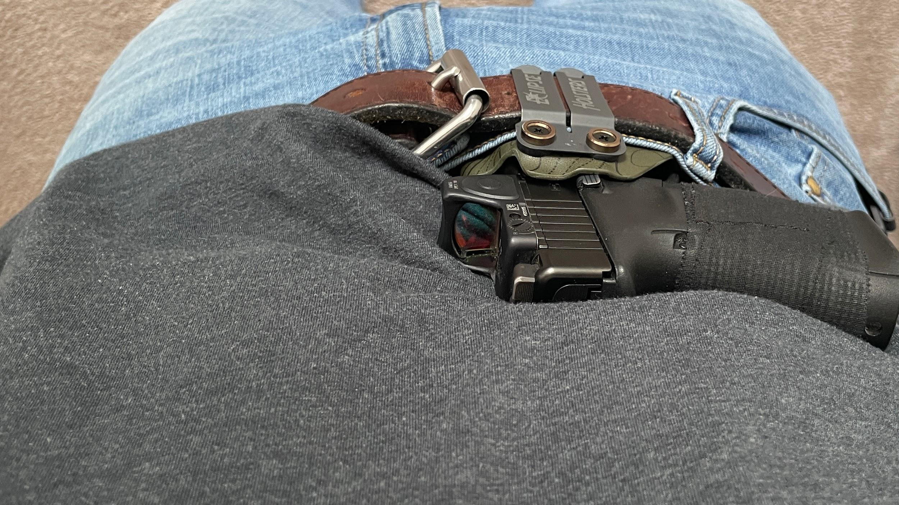
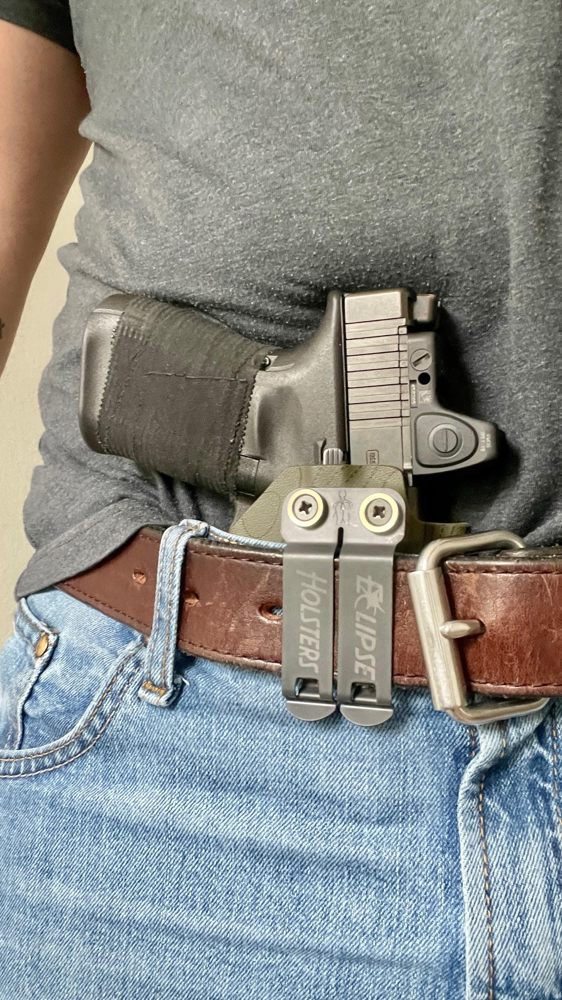
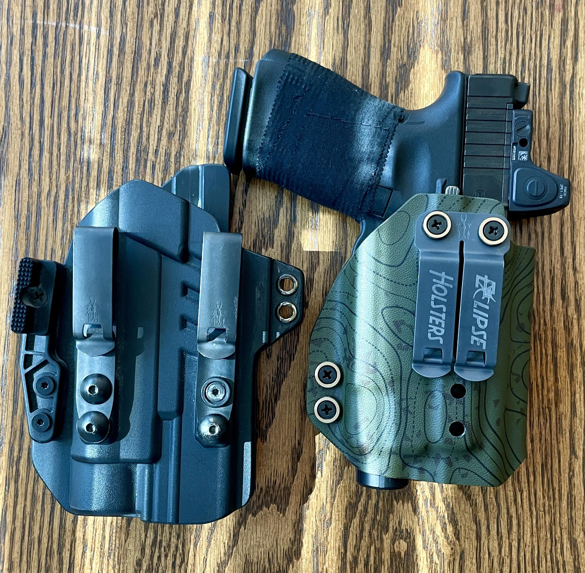

This kicks off my time with the Eclipse lineup, starting with the Sirius holster configured for a Glock 19 with a TLR-7 series light. The setup here is the Recon Monsoon pattern with antique washers and a Discreet Carry Concepts monoblock clip.
While the holster is designed around the TLR-7X, Eclipse confirmed it would also fit the TLR-7 HLX. I've been running the HLX for review, and while it does protrude slightly from the bottom, it's minimal and doesn't affect function. If anything, the ability to run both lights adds some flexibility.
Fit and finish are exactly where they should be. It's slim, compact, and avoids the extra bulk you sometimes see with Glock 19 holsters.
Retention
Retention is one of those things that either builds confidence or kills a holster immediately.
The Sirius lands in a really solid middle ground. It has a defined, positive retention without being overly aggressive. You get that clean, audible click when seating the gun, and more importantly, consistent resistance on the draw.
No binding, no weird hang-ups around the light, even with the HLX.
Where this setup really stands out is how stable the holster feels once mounted. The DCC monoblock locks the entire system down to the belt in a way that single clips just don't. Even compared to running dual clips, this feels tighter and more planted.
Bottom line: retention is predictable, repeatable, and confidence-inspiring.
Concealability
This is where I was honestly expecting more compromise, given it's a Glock 19 with a weapon light.
But the Sirius does a good job keeping things tight to the body. The slim profile and lack of unnecessary material help more than you'd think.

This configuration doesn't include a wing or claw, and surprisingly, I haven't felt the need to add one. Even under just a t-shirt, printing is well controlled.
That said, if you're trying to absolutely minimize printing in lighter clothing, a claw will still help. The fact that it performs this well without one is a strong baseline.
Comfort (Daily Wear)
Comfort is where bad holsters quietly fail over time.
The Sirius avoids the usual issues. No sharp edges, no pressure points, no awkward angles digging into you throughout the day. It's a clean, well-shaped piece of kydex.
Sitting, driving, moving around — it stays out of the way. That's largely due to how compact it is for a Glock 19 setup.
The monoblock also plays a role here. Because it keeps the holster from shifting, you're not constantly readjusting, which makes a bigger difference than people realize.

Build Quality & Design
This is a well-executed holster.
- Clean edges
- Solid molding around the firearm and light
- No excess material
- Tight, consistent construction

One thing Eclipse did really well here is flexibility. The holster design allows you to run a variety of mounting hardware, including tuckable overhook clips, soft loops, DCC single clips, FOMI clips, or a monoblock. That gives you the ability to fine-tune not just how the holster attaches, but also your carry angle or cant depending on your setup.
The Recon Monsoon pattern with antique washers is a nice touch aesthetically without being over the top. I've always been a fan of topo-style patterns, and OD green — well, OD green is life. This one hits that balance of looking good without trying too hard.
Nothing about it feels cheap or rushed.
Comparisons (Where It Stands)
Compared to bulkier kydex holsters, this is noticeably slimmer and more refined.
Compared to more minimalist setups, you're obviously carrying more gun here, but the Sirius does a good job minimizing that gap.
Where It Really Separates Itself
- Better belt stability than most single-clip setups
- Less bulk than a lot of "duty-style concealed" holsters
- Strong performance even without a claw
Where Others Might Edge It Out
- Dedicated concealment rigs with aggressive claws or wedges will still win in deep concealment
- Ultra-minimal holsters will feel lighter, but at the cost of stability and retention
This sits in a very practical middle ground. It's built for real-world carry, not just range use or niche concealment setups.
The Sirius is a straightforward, well-executed holster that focuses on what actually matters: retention, comfort, and stability. It handles a Glock 19 with a weapon light better than expected, especially without needing extra concealment aids like a claw. The DCC monoblock is a standout here — it takes an already solid holster and makes it feel locked in and dependable. Add in the fact that Eclipse is a Virginia-based company and easy to work with, and it rounds out as a genuinely positive experience. If this is any indication of the rest of their lineup, I'm looking forward to spending more time with their gear.